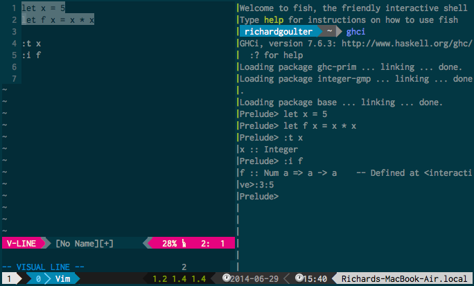

Tmux + Vim + Fish
Tags: programming.vim, programming.tmux, programming.terminal, programming.fish
My use of vim until recently has more/less been in GVim or MacVim. That’s not necessarily a bad thing, but I hadn’t bothered much with terminal vim. Getting the colours to look not-awful was a difficult task.
The difficulty, my current understanding is, is that on the terminal only 256 colours can be shown. (Many colour schemes use colours other than just these 256). The console also has 16 ANSI colour escape codes. Terminal emulator applications can configure what these 16 colour values actually are.
The Solarized page notes that for Terminal Vim users, there are two options: one option is to have the terminal emulator be Solarized-themed, and the vim solarized layout can use the 16 ANSI colors in coordination with this theme to match a true Solarized vim theme; the other option is to have Solarized use the terminal’s 256 colors, and give the closest approximation to a Solarized vim theme.
So following that help, vim can exist in the terminal without looking awful.
On OSX, I ran into an obscure error when starting a homebrew install of Vim on the terminal, which was resolved by putting an alias in my .bash_profile.
Anyway, on its own, there’s little advantage to using Vim in the terminal by itself like that. I’d heard that with Tmux, and a Vim plugin like Slimux (see this intro), you can do fun things with a REPL. (Write text in Vim, then send it to the REPL.. so you get to keep the text you write, but don’t have to write it twice to see if it works).

Anyway. A search for “tmux vim zsh” yields ‘The Text Triumvirate’; that is, word-on-the-street about these things is probably worth something.
Tmux the popular successor to GNU screen; to my understanding, the cool things these do are: i) multiple terminal ‘windows’ within one terminal (thus Terminal MUltipleXing), and ii) attach/detach “sessions”, which can continue running even if you log out from a terminal.
The biggest issue with Tmux was getting it to have the TERM environment variable to be “screen-256color”. And the learning curve for figuring out how to do stuff. I wonder how much I’m missing out on, but I got help from that Hawkhost post (note that the text can’t be copy-pasted here because it’s fancytext or something). The ArchLinux wiki had some good advice, too.
The default terminal shell is Bash. Zsh and Fish are two more modern shells. A lot of people seem to be using Zsh, but I hear to get it to be a good shell it requires a lot of configuration (which is where things like oh-my-zsh come into it). Fish, “friendly interactive shell” is more about being easy to use from the get-go. (Perhaps, then, Fish is like the Sublime Text of shells?).
I chose Fish shell because it wasn’t Zsh. But still, Fish is a fantastic shell compared to Bash. (For example, it’s colourful, and has a cool predictive/auto-completion thing going on).
There were some difficulties in changing my shell to Fish. Biggest issue was Vim wanted a Bourne-compatible shell for the system shell, which Fish wasn’t, so Vim had to be told to use Bash.
And with the issue of ‘making it look cool’, one option is to “Powerline everything”. For Vim, I’d used vim-airline (a lightweight alternative to Powerline). Powerline can also be added to Tmux, which I’d recomment. Powerline can be added to your shell, too, which is slightly over-the-top. YMMV. But still, it’s possible.
comments powered by Disqus